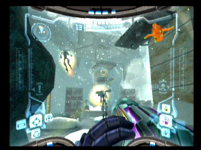
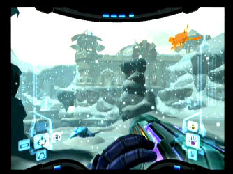

and Metroid Prime continues...:
The player may experience frustration in these parts, as sense of direction is hard to find, and puzzles are well hidden. This is where the  use of the scanning visor comes in. Downloadable information means that the log book gradually gets more and more filled, and can prove a good read when game play is not tasking. Puzzles are solved and switches are found, and Samus moves on to Ice Ruins. This place houses the Sheegoths. (More information about this type of creature can be found here).
Items like the Boost Ball can be won after defeating a boss. This can be used when in Morph ball mode on the half pipes to reach those areas previously inaccessible.
 Phendrana drifts proves to be the gateway to the area where you first meet the Space Pirates and Metroids. Phendrana happens to be the base for the Space Pirates evil plan to experiment on the existing life forms that live on Tallon IV. Computers provide a good resource for information, but come with Space Pirates of every kind (some of which cannot be seen due to optical camouflage - luckily, a thermal visor is at hand making them visible!).
This is an introduction to the Metroid Prime game (although there is more detail than this in the full game). The story continues with much more detail from here and to find out what happens next you'll have to play the game yourself!
Now you need to view the other items on the web-site by using the menus on the left. (A new menu will appear when you click on Pause or Options).